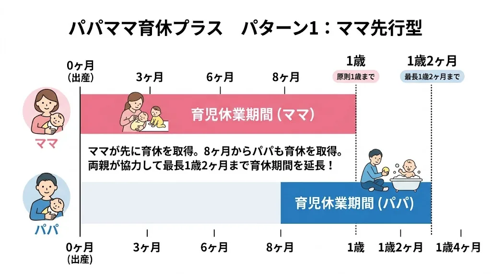
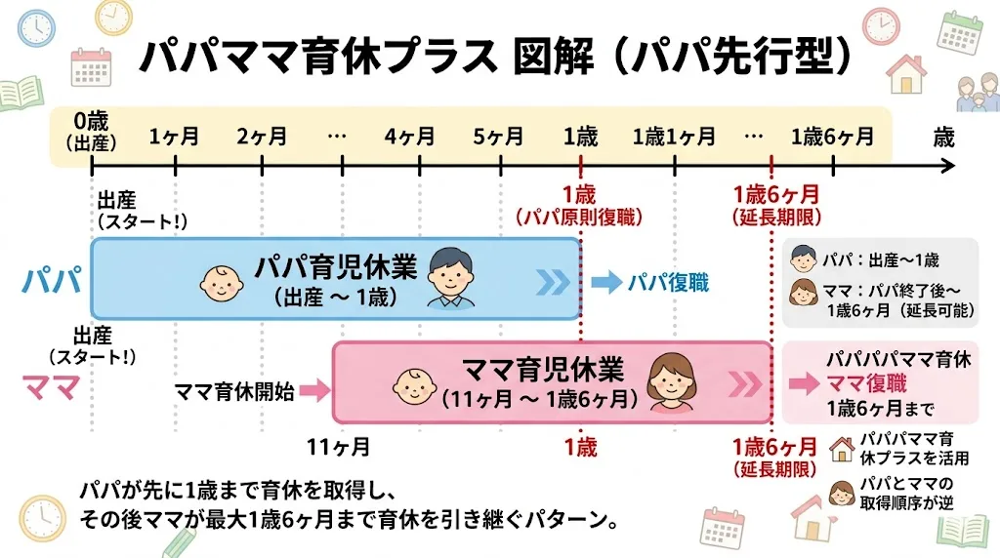
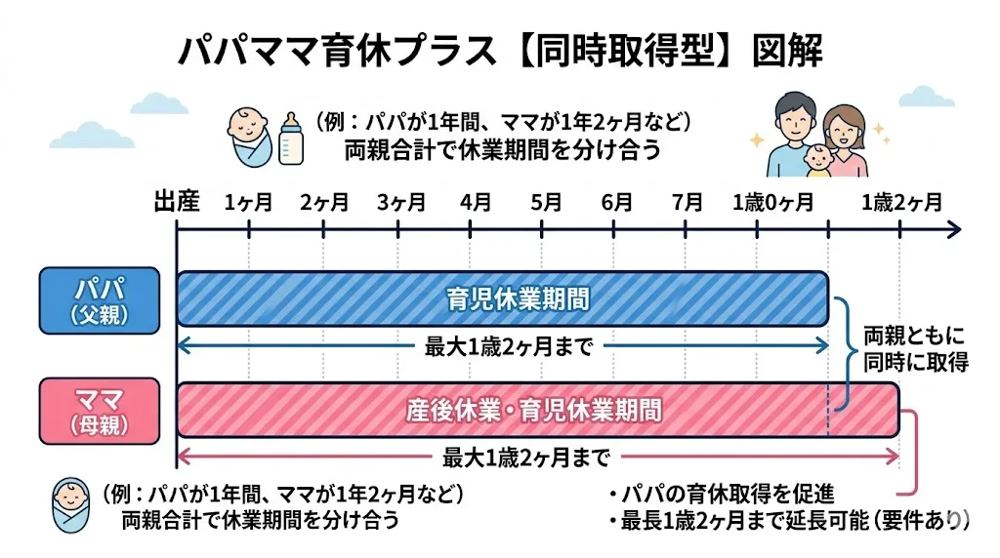

1. パパママ育休プラスとは？
通常の育休は子が1歳になるまでですが、パパとママの両方が育休を取得することで、育休期間の終点が2ヶ月延長されます。
パパママ育休プラスで延長されるのは「期間の終点（いつまで）」であり、各自が取得できる上限（原則1年間）は変わりません。
✅ 育休の終点：1歳 → 1歳2ヶ月に延びる
❌ 各自の取得上限：1年のまま（1人で1年2ヶ月取れるわけではない）
2. 図解：通常の育休 vs パパママ育休プラス
2つの制度の違いを、タイムラインで比較してみましょう。

通常の育休 vs パパママ育休プラス（比較図）
※バーの長さは目安です
パパが育休を取得することで「パパが育休中の間、ママも育休を継続できる」仕組みです。どちらか一方だけでなく、両方が取得することが条件です。
3. 取得パターン別図解（3パターン）
パパママ育休プラスには、いくつかの取り方のパターンがあります。それぞれのメリット・デメリットとともに確認しましょう。
パターン1：ママが先、パパが後（もっとも多い取り方）
タイムライン（目安）
ポイント：育休を切れ目なく1歳2ヶ月までカバー。ママが先に育休を取り、子が8〜10ヶ月頃からパパが育休に入ることで、子どもが常に親のどちらかと過ごせます。
- ✅ 育休を切れ目なくつなげられる
- ✅ ママが早めに復職でき、復帰後のキャリア回復が早い
- ✅ パパが育児に本格参加できる
- ⚠ パパが後から取るため、職場の調整が必要
パターン2：パパが先、ママが後（逆パターン）

タイムライン（目安）
ポイント：パパが出産直後に育休を取り、ママが1歳2ヶ月まで育休を取るパターン。産後の最も大変な時期にパパが家にいられます。
- ✅ 産後の回復・育児の大変な時期にパパがいられる
- ✅ ママが1歳2ヶ月まで育休を取れる
- ⚠ パパの育休はパターン1より短くなりやすい
- ⚠ ママ1人で長期育休になるため体力的な負担に注意
パターン3：同時取得（両方が一緒に育休）

タイムライン（目安）
ポイント：ママとパパが期間の一部を重複して育休を取得するパターン。「重なってはいけない」というルールはなく、同時取得も制度上OKです。
- ✅ 重なる期間は2人体制で育児できる
- ✅ パパも子の成長をじっくり見られる
- ⚠ 重複期間は世帯収入が2人分減るため経済的な注意が必要
- ⚠ 各自の育休取得上限は1年のまま変わらない
4. 取得条件チェックリスト
パパママ育休プラスを利用するには、以下の4つの条件をすべて満たす必要があります。
✅ 配偶者が育児休業を取得している（していた）こと
→ どちらが先でも後でもOK。両方が育休経験があることが条件
✅ 子が1歳に達する前に育休を開始すること
→ 子が1歳になってからの育休開始では対象外
✅ 本人の育休開始日が、配偶者の育休開始日以降であること
→ 配偶者よりも先に育休を取り終えていてもOK（育休を「取ったことがある」ことが重要）
✅ 本人の育休取得日数の合計が1年以内であること
→ パパママ育休プラスを使っても、各自の取得上限は1年間
5. よくある勘違いTOP5
パパママ育休プラスは制度の名前や仕組みが複雑なため、誤解が多い制度です。代表的な勘違いを確認しておきましょう。
❌ 勘違い1：「パパもママも1歳2ヶ月まで取れる」
✅ 正解：各自の取得期間の上限は原則1年間のまま。育休の「終点」が1歳2ヶ月まで延びるだけで、1人が1年2ヶ月取れるわけではありません。
❌ 勘違い2：「パパが育休を取らないと使えない」
✅ 正解：どちらが先でもOK。ママが後から育休を取る場合でも、配偶者（パパ）が育休を取ったことがあれば対象になります。
❌ 勘違い3：「同時に取っている期間は対象外」
✅ 正解：同時取得も制度上まったく問題ありません。パパとママが同じ期間に育休を取ることも可能です。
❌ 勘違い4：「産後パパ育休（出生時育児休業）を使ったら使えない」
✅ 正解：産後パパ育休はパパママ育休プラスとは別の制度です。産後パパ育休を使いつつ、さらにパパママ育休プラスも併用することが可能です。
❌ 勘違い5：「非正規雇用（パート・契約社員）は使えない」
✅ 正解：一定の条件（入社1年以上、1歳6ヶ月まで契約継続の見込みなど）を満たせば、契約社員・パートの方もパパママ育休プラスを利用できます。
6. 申請手続きの流れ
パパママ育休プラスを利用するには、通常の育休申請に加えて「配偶者が育休を取っている（取った）こと」を会社に申告します。
育休開始予定日の1ヶ月前（産後パパ育休は2週間前）までに申請します。
配偶者が育休を取得していること（または取得予定であること）を示す書類を揃えます。会社によって必要書類が異なるため、人事部に確認しましょう。
「育児・介護休業法第9条の2」に基づく申出であることを会社に伝え、育休期間を1歳2ヶ月まで設定して申請します。
育児休業給付金の延長申請は会社の担当者がハローワークに行います。自分で申請する必要はありません。
パパママ育休プラスは2010年に創設されましたが、まだ会社の担当者が詳しくないケースがあります。「育児・介護休業法第9条の2」という条文名を伝えると、担当者がスムーズに対応できる場合があります。
7. 保育園申し込みとの関係（世田谷区）
パパママ育休プラスで育休が1歳2ヶ月まで延びると、保育園の入園タイミングの選択肢が広がります。
入園希望月の選択肢が広がる
通常、育休1年で復職する場合、子どもの誕生月によって入園希望月が決まります。パパママ育休プラスを使うと、育休終了が2ヶ月延びることで、入園希望月をずらすことができます。
・通常の育休（〜1歳）：翌年4月入園が主な選択肢
・パパママ育休プラス（〜1歳2ヶ月）：翌年4月〜6月入園まで選択肢が広がる
ただし、世田谷区では入園月の翌月末までに復職する必要があります。育休期間と復職スケジュールを合わせて区役所に確認してください。
4月一斉入園と途中入園の選択
パパママ育休プラスで1歳2ヶ月まで育休が延びることで、「4月の一斉入園に出遅れても、もう少し待てる」という余裕が生まれます。一方で、1歳2ヶ月を過ぎても保育園に入れない場合は、育休延長（1歳6ヶ月・2歳）の手続きが必要になります。
世田谷区の保育園 空き状況を確認しよう
希望の保育園に空きがあるか、今すぐチェックできます。
8. よくある質問
Q. パパママ育休プラスを使うと育休は何歳まで取れますか？
子が1歳2ヶ月になるまで育休期間の終点を延長できます。ただし、パパ・ママ各自の取得期間の上限は原則1年間（変わりません）。終点が1歳2ヶ月まで延びるだけで、1人で1年2ヶ月取れるわけではない点に注意してください。
Q. パパが育休を取らないとパパママ育休プラスは使えませんか？
いいえ。「配偶者が育児休業を取得している」ことが条件なので、どちらが先でもOKです。ママが先に育休を取り、後からパパが育休を取る場合も対象になります。逆にパパが先でも問題ありません。
Q. 育児休業給付金もパパママ育休プラスの期間中は支給されますか？
はい。パパママ育休プラスの期間中（1歳〜1歳2ヶ月）も育児休業給付金が支給されます。支給額は通常の育休中と同様、給与の50%です（育休開始180日以降のため）。
Q. 世田谷区の保育園申し込みとパパママ育休プラスはどう関係しますか？
育休期間が1歳2ヶ月まで延びることで、入園希望月の選択肢が広がります。例えば4月生まれの子なら、通常は翌年4月入園が主な選択肢ですが、パパママ育休プラスを利用することで6月入園まで選択肢が広がります。ただし復職期限との兼ね合いがあるため、区役所への事前確認をおすすめします。